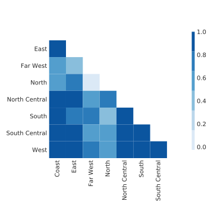

Time Series Metrics
June 1, 2018
WECC (CAISO, Western US)
- 21 original load profiles, 132 time series
- 8,784 hourly timestamps spanning 2004 (leap year)
- Disaggregated via load participation factors
- Also have aggregated version with just original load profiles

RTS 96
- 1 original load profile, 51 time series
- The sole original load profile looks strange
- 8,736 hourly timestamps spanning 1996 (except Dec. 30-31, so 364 days)

RTE (France)
- 12 original load profiles, 12 total time series
- 12 French administrative divisions
- 80,304 half-hourly timestamps spanning 2013 to July 2017 (578 days)
- Realistic, broad, recent

ERCOT (Texas)
- 8 original load profiles, 8 total time series
- Corresponds to 8 ERCOT weather zones
- 143,135 hourly timestamps spanning 2002 - April 2018 (16 years)

RTS GMLC (on GitHub)
- 3 synthesized load profiles corresponding to RTS network areas
- 105,408 5-minute timestamps spanning the year 2020 (366 days)


Realistic cross-correlation
RTE

ERCOT

Effects of disaggregation
Aggregated WECC

Disaggregated WECC

Bad dataset
RTS 96
- Copying across areas
- Note color scale

Correlation coefficient distributions
- RTS 96 stands out
- High correlation in RTE (winter-peaking region)

Deriving a cross-correlation metric

Singular value distributions
- WECC, RTS 96 stand out again
- “Plateaus”

Effects of disaggregation

DFT results
- 1/day and 1/week peaks, harmonics

DFT summary
- metric idea: use key DFT components to summarize load profiles
- Fails to capture time-varying behavior
- Does reveal disaggregation

Normalized ERCOT load profiles

- Strong 1/day component in summer
Choosing embedding dimension \(M\)
- Higher \(M\): capture greater periods, cleanly isolate noise
- Lower \(M\): eigengrouping easier, analysis faster
- What is the dimension of the signal space?
- Choose multiple of inherent periodicity (Miranian2013)
- \(M=24\) makes grouping obvious

RTE SSA components

Classifying days in Ile-de-France
- Tough to distinguish winter weekends from summer days
- Refine initial assumption about season boundaries in light of predictions
- Add temperature data to enhance method